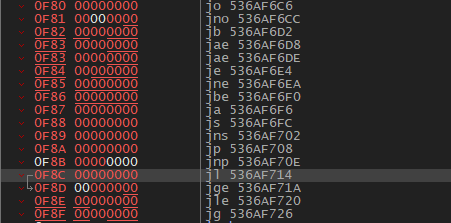
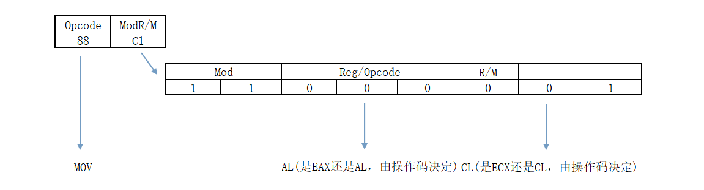

# 楔子
之前看过，不过并没有总结，今天总结一下，以后有时间了，写一个反汇编引擎。
学习 Intel 的硬编码指令格式主要就是查表了，记住那几张表就好了。
# 什么是硬编码
在计算机上程序不过是一堆二进制数字，其想要运行起来，即被 CPU 当成指令执行，是要遵循 Intel 的指令格式。
每一条指令，最短 1 字节，最长 15 字节
1、Intel 对指令参数的设计了一种表示方式，格式是 Zz 一个大写字母加上一个小写字母。
2、大写字母表示寻找方式编码（寄存器，ModR/M，跳转相对地址，16:32 地址格式等等），从 A-Z 共 26 种.
3、小写字母表示操作数的类型（byte，word，dword，fword 等等不定，根据 cpu 模式或改写指令决定）
z 有大约十几种表示方式。
4、他们的组合再加上纯寄存器表示了 intel 的所有操作对象。
具体参见 Intel 开发手卷第 2 卷的 1467 页。有详细的介绍。
# 经典定长指令
# 会修改寄存器的定长指令。
- PUSH/POP
0x50 PUSH EAX
0x51 PUSH ECX
0x52 PUSH EDX
0x53 PUSH EBX
0x54 PUSH ESP
0x55 PUSH EBP
0x56 PUSH ESI
0x57 PUSH EDI
0x58 POP EAX
0x59 POP ECX
0x5A POP EDX
0x5B POP EBX
0x5C POP ESP
0x5D POP EBP
0x5E POP ESI
0x5F POP EDI
- INC/DEC：
0x40 - 0x47 INC ERX
0x48 - 0x4F DEC ERX
- MOV Rb, Ib
0xb0 - 0xb7 MOV Rb, Ib
- MOV ERX, Id
0xb8 - 0xbF MOV ERX, Id
- XCHG EAX, ERX
0x90 - 0x97 XCHG EAX, ERX
以下的这些知识在 Intel 白皮书上都有，在此做个总结。
# 特点
1、记住 32 位、16、8 位的通用寄存器，按照顺序记住.
EAX ECX EDX EBX ESP EBP ESI EDI
AX CX DX BX SP BP SI DI
AL CL DL BL
AH CH DH BH
SP BP SI DI 的低 8 位是不能用的，但在 64 位中可以使用分割出的 spl bpl sil dil。
2、将操作数编码到指令当中
# 读表
1、i64/o64/d64
i64：64 位无效
o64：只 64 位有效
d64：64 位模式下，操作数宽度默认为 64 位
2、关于寄存器
(1) 当操作码需要使用寄存器做为操作数时，寄存器的名字说明其宽度是 64、32、16、8 位.
(2) eXX 比如 eAX 可以表示 AX EAX
(3) rXX 比如 rAX 可以表示 AX EAX RAX
# 会修改 EIP 的定长指令
- 0x70 - 0x7F
条件跳转，后跟一个字节立即数的偏移 (有符号)，共两个字节。
如果条件成立，跳转到 当前指令地址 + 当前指令长度 + Ib
最大值：向前跳 7f，向后跳 80
0x70 JO
0x71 JNO
0x72 JB/JNAE/JC
0x73 JNB/JAE/JNC
0x74 JZ/JE
0x75 JNZ/JNE
0x76 JBE/JNA
0x77 JNBE/JA
0x78 JS
0x79 JNS
0x7A JP/JPE
0x7B JNP/JPO
0x7C JL/JNGE
0x7D JNL/JGE
0x7E JLE/JNG
0x7F JNLE/JG
- 0x0F 0x80 - 0x0F 0x8F
条件跳转，后跟四个字节立即数的偏移 (有符号)，共五个字节。
如果条件成立，跳转到 当前指令地址 + 当前指令长度 + Id
最大值：向前跳 7FFFFFFFF，向后跳 80000000
0x0F 0x80 JO
0x0F 0x81 JNO
0x0F 0x82 JB/JNAE/JC
0x0F 0x83 JNB/JAE/JNC
0x0F 0x84 JZ/JE
0x0F 0x85 JNZ/JNE
0x0F 0x86 JBE/JNA
0x0F 0x87 JNBE/JA
0x0F 0x88 JS
0x0F 0x89 JNS
0x0F 0x8A JP/JPE
0x0F 0x8B JNP/JPO
0x0F 0x8C JL/JNGE
0x0F 0x8D JNL/JGE
0x0F 0x8E JLE/JNG
0x0F 0x8F JNLE/JG

- 其他指令
0xE0 LOOPNE/LOOPNZ Ib (Jb) 共 2 字节
ECX = ECX - 1 当 ZF = 0 && ECX!=0 时跳转到 当前指令地址 + 当前指令长度 + Ib
0XE1 LOOPE/LOOPZ Ib (Jb) 共 2 字节
ECX = ECX - 1 当 ZF = 1 && ECX != 0 时跳转到 当前指令地址 + 当前指令长度 + Ib
0XE2 LOOP Ib (Jb) 共 2 字节
ECX = ECX - 1 当 ECX!=0 时跳转到 当前指令地址 + 当前指令长度 + Ib
0XE3 JrCXZ Ib (Jb) (在 32 位模式中，rCX 为 ECX) 共 2 字节
当 ECX = 0 时跳转到 当前指令地址 + 当前指令长度 + Ib
(自己控制步长)
0xE8 CALL Id (Jd) 共 5 字节
CALL 指令的下一条指令地址入栈后，跳转到 当前指令地址 + 当前指令长度 + Id
0xE9 JMP Id (Jd) 共 5 字节
跳转到 当前指令地址 + 当前指令长度 + Id
8 个段寄存器： ES CS SS DS FS GS LDTR TR (顺序固定)(段寄存器实际是个结构体，共 96 位，其中仅 16 位是汇编指令可以访问到的）
0xEA JMP Ap （Ap：六字节长度的直接地址） 共 7 字节
JMP CS:Id 将 Ap 中的高 2 位赋值给 CS，低 4 位直接赋值给 EIP， 即跳转
EA 12345678 1B00 JMP FAR 001B:78563412
0xEB JMP Ib (Jb) （短跳）
跳转到 当前指令地址 + 当前指令长度 + Ib
0xC3 RET 共 1 字节
EIP 出栈
0xC2 RET Iw 共 3 字节
EIP 出栈后，ESP = ESP + Iw
0XCB RETF （return far） 共 1 字节
出栈 8 个字节，低 4 个字节赋值给 EIP, 高 4 个字节中低 2 位赋值给 CS
0xCA RETF Iw 共 3 字节
出栈 8 个字节，低 4 个字节赋值给 EIP, 高 4 个字节中低 2 位赋值给 CS 后，ESP = ESP + Iw
ret -> pop eip
retf -> pop eip, pop cs
# 经典变长指令
# 经典变长指令之 ModR/M
0x88 MOV Eb, Gb G：通用寄存器 | |
0x89 MOV Ev, Gv E：寄存器 / 内存 | |
0x8A MOV Gb, Eb b：字节 | |
0x8B MOV Gv, Ev v：Word, doubleword or quadword |
当指令中出现内存操作对象的时候，就需要在操作码后面附加一个字节来进行补充说明，这个字节被称为 ModR/M。
该字节的 8 个比特位被分成了三部分：
| 7-6 | 5-3 | 2-0 |
|---|---|---|
| Mod | Reg/Opcode | R/M |
其中，Reg/Opcode (第 3、4、5 位，共 3 个字节) 描述指令中的 G 部分，即寄存器
| 寄存器宽度 | 000 | 001 | 010 | 011 | 100 | 101 | 110 | 111 |
|---|---|---|---|---|---|---|---|---|
| 32 | EAX | ECX | EDX | EBX | ESP | EBP | ESI | EDI |
| 8 | AL | CL | DL | BL | AH | CH | DH | BH |
Mod (第 6、7 位) 和 R/M (第 0、1、2 位) 共同描述指令中的 E 部分，即寄存器 / 内存
那么，这 8 个位具体是如何工作的呢，Inter 操作手册给出了一张表
以下内容就是解释这个表。
前面我们已经讨论了 Reg/Opcode 部分 (即 3、4、5 位) 是怎样描述寄存器的
接下来我们重点说一下 Mod 和 R/M 是怎样合作描述寄存器 / 内存的
# Mod = 00
当 Mod = 00 时，ModR/M 字节通过寄存器直接进行内存寻址
例如当操作指令为 88 01 时，其对应的汇编为 MOV BYTE PTR DS:[ECX], AL
88 是操作指令，其后跟随的 01 为 ModR/M
0x88 描述了操作数宽度为 b (byte)，且操作数的顺序为 Eb Gb，所以这条汇编指令为 MOV BYTE PTR DS:[ECX], AL
同理可以分析出如下操作指令对应的汇编指令
8801 | mov byte ptr ds:[ecx],al | |
8901 | mov dword ptr ds:[ecx],eax | |
8A01 | mov al,byte ptr ds:[ecx] | |
8B01 | mov eax,dword ptr ds:[ecx] |
需要注意的：
ESP 指向栈顶，是浮动的，不确定的，Inter 将这个编码废弃，由另外的格式来说明。
EBP 指向栈底，而 [EBP] 通常存储上一个 EBP，所以 [EBP] 无数据操作意义，Inter 将这个编码废弃，改为立即数寻址。
例如 88 05 12 34 56 78 的汇编指令为 MOV BYTE PTR DS:[78563412], AL
在 Intel 白皮书中 2-2 的表中可以看到对其有解释当 ModR/M 为 05 0D 15 1D 25 2D 35 3D…… 时，这个指令的后面还会接着取 4 个字节。
例如：
882578563412 -> mov byte ptr ds:[0x12345678],ah
892578563412 -> mov dword ptr ds:[0x12345678],esp
# Mod = 01
当 Mod = 01 时，ModR/M 字节通过寄存器 + I8 进行内存寻址 (I 为立即数，即 8 位立即数)
例如当操作指令为 88 41 12 时，其对应的汇编为 MOV BYTE PTR DS:[ECX+12],AL
88 是操作指令，其后跟随的 41 为 ModR/M
所以这条汇编指令为 MOV BYTE PTR DS:[ECX+12],AL
同理可以分析出如下操作指令对应的汇编指令
8841 12 | mov byte ptr ds:[ecx+12],al | |
8941 12 | mov dword ptr ds:[ecx+12],eax | |
8A41 12 | mov al,byte ptr ds:[ecx+12] | |
8B41 12 | mov eax,dword ptr ds:[ecx+12] |
当 R/M = 100 时 (即 ESP)，该指令编码废弃，修改为其他含义，既 SIB，后面再一起总结。
# Mod = 10
当 Mod = 10 时，ModR/M 字节通过寄存器 + I32 进行内存寻址
例如当操作指令为 88 81 12 34 56 78 时，其对应的汇编为 MOV BYTE PTR DS:[ECX+78563412],AL
88 是操作指令，其后跟随的 81 为 ModR/M

所以这条汇编指令为 MOV BYTE PTR DS:[ECX+78563412],AL
同理可以分析出如下操作指令对应的汇编指令
8881 78563412 | mov byte ptr ds:[ecx+12345678],al | |
8981 78563412 | mov dword ptr ds:[ecx+12345678],eax | |
8A81 78563412 | mov al,byte ptr ds:[ecx+12345678] | |
8B81 78563412 | mov eax,dword ptr ds:[ecx+12345678] |
当 R/M = 100 时 (即 ESP)，该指令编码废弃，修改为其他含义，既 SIB，后面再一起总结。
# Mod = 11
当 Mod = 11 时，ModR/M 字节直接操作两个寄存器
例如当操作指令为 88 C1 时，其对应的汇编为 MOV CL,AL
88 是操作指令，其后跟随的 C1 为 ModR/M

所以这条汇编指令为 MOV CL,AL
同理可以分析出如下操作指令对应的汇编指令
88C1 | mov cl,al | |
89C1 | mov ecx,eax | |
8AC1 | mov al,cl | |
8BC1 | mov eax,ecx |
# 经典变长指令 Reg/Opcode
| 7-6 | 5—3 | 2-0 |
|---|---|---|
| Mod | Reg/Opcode | R/M |
在上面，3-5 位用来标识寄存器，Mod 字段 与 R/M 字段共同用来标识寄存器与内存
但 3-5 字段，并不仅仅用来标识寄存器，有些时候，用来标识 Opcode
参见 Table A-2 中 ：

80 81 82 83 这几个编码并没有给出具体的操作码。
这里要注意：凡是出现 Grp 的，均参见 TableA-6
举例说明：
80 65 08 FF
查表步骤：
1、第一个字节为 80 查 Table-2 表，得到对应结构：Eb,Ib
2、第二个字节为 ModR/M 字段，所以查分 65:
01 100 101
Mod 与 R/M 字段 查 Table2-2 得到对应的结构：[EBP+DIS8]
3、100 字段 查表 TableA-6 得到对应操作码为：AND
4、最终的指令格式：
AND [ebp+dis8],Ib
AND BYTE PTR SS:[EBP+08],0xFF
# 经典变长指令之 SIB 字段
ModR/M 字段是用来进行内存寻址的，可当地址形如 DS:[EAX + ECX*2 + 12345678] 时，仅仅靠 ModR/M 字段，是描述不出来的。
这时就在 ModR/M 后面增加一个 SIB 字节，与 ModR/M 字段共同描述。
下图是前面没有涉及到的三种情况。
| Address | Mod | R/M |
|---|---|---|
| [--][--] | 00 | 100 |
| [--][--]+disp8 | 01 | 100 |
| [--][--]+disp32 | 10 | 100 |
这三种情况表示，在 ModR/M 字节后，还紧跟着一个 SIB 字节。SIB 字节的 8 个位被分成了三部分：
| 7—6 | 5-3 | 2-0 |
|---|---|---|
| Scale | Index | Base |
在例子 DS:[EAX + ECX*2 + 12345678] 中， Scale 描述 21， Index 描述 ECX, Base 描述 EAX，而 12345678 由 ModR/M 字段决定。
所以 SIB 字段描述的方式为：
Base + Index*2^Scale (Scale 描述 2Scale，所以只能为 *1 *2 *4 *8)
# 例子分析
下面我们通过分析指令，来看看 SIB 是怎么工作的
MOV BYTE PTR DS:[EAX+ECX*2+78563412],AL
操作码
这条指令的原型为 MOV Eb Gb, 所以操作码为 0x88。且操作数中有 Eb，所以必然存在 ModR/M 字段
ModR/M 字节
1、Gb 为 AL，所以 Reg/Opcode 部分为 000
| Mod | Reg/Opcode | R/M |
|---|---|---|
| 0 0 0 |
2、内存地址为 寄存器 + I32 的格式，所以 Mod 部分为 10，偏移为 78563412
| Mod | Reg/Opcode | R/M |
|---|---|---|
| 1 0 | 000 |
3、内存地址中寄存器部分多个寄存器，即在 ModR/M 字节后，还跟着一个 SIB 字节，所以 R/M 部分为 100
| Mod | Reg/Opcode | R/M |
|---|---|---|
| 1 0 | 000 | 1 0 0 |
由此，ModR/M 字节为 0x84
SIB 字节
1、DS:[EAX+ECX*2+78563412] 中，Base 对应着 EAX，所以 Base 部分为 000
| Scale | Index | Base |
|---|---|---|
| 0 0 0 |
2、Index 对应着 ECX，所以 Index 部分为 001
| Scale | Index | Base |
|---|---|---|
| 0 0 1 | 0 0 0 |
3、Scale 对应着 21，所以 Scale 部分为 01
| Scale | Index | Base |
|---|---|---|
| 0 1 0 | 0 0 1 | 0 0 0 |
由此，SIB 字节为 0x48
以上总结为：
由上，可得出指令编码为 88 84 48， 再加上偏移 12345678，完整的指令编码为 88 84 48 12 34 56 78
在 xdbg 中查看：
888448 12345678 | mov byte ptr ds:[eax+ecx*2+78563412],al
无误！
SIB 字段的图表如下
1、当 Index = 100b 时，Index 被 0 替代，此时只有 Base 有效
2、当 Base = 101b 时，Base 被 0 替代，此时只用 Index 有效
作业：
89 2C 15
89 mov Ev, Gv
2C --> 00 101 100
Mod 0 Reg/Opcode 5 R/M 4
Reg/Opcode 5 --> mov Ev, ebp
Mod 0 R/M 4 --> SIB --> mov [-][-],ebp
15 --> 00 010 101
Scale 0 Index 2 Base 5
Base 5 Mod 0 --> [Scale Index]+ dip32
[Scale Index] --> Scale 0 Index 2 --> [edx]
mov [edx+dip32],ebp
89AC15
89 mov Ev, Gv
AC --> 10 101 100
Mod 2 Reg/Opcode 5 R/M 4
Reg/Opcode 5 --> mov Ev, ebp
Mod 0 R/M 4 --> SIB --> mov [-][-],ebp
15 --> 00 010 101
Scale 0 Index 2 Base 5
Base 5 Mod 2 --> [Scale Index] + dip32 + [EBP]
[Scale Index] --> Scale 0 Index 2 --> [edx]
mov [edx+ebp+dip32],ebp
898461
89 mov Ev,Gv
84 --> 10 000 100
Mod 2 Reg/Opcode 0 R/M 4
Reg/Opcode 0 --> mov Ev,eax
Mod 2 R/M 4 --> SIB --> mov SIB+dip32 ,eax
SIB 的描述为： Base + Index*2^Scale
61 --> 01 100 001
Scale 1 Index 4 Base 1
Base 1 --> ecx
Scale 1 Index 4 --> none
所以 SIB 为 ecx
mov [ecx+dip32],eax
# 指令前缀
- 段前缀：
段寄存器的作用：早期 8086cpu 寻址范围小，Inter 便通过段寄存器来拓展内存。即通过段寄存器基址 + 偏移的方式来寻址。
[] 中的地址为有效地址 (Effect Address)，有效地址 + 段寄存器基址才是实际地址 LA (线性地址 Line Address)。
线性地址 = 段基址 + 有效地址
在后来的 80386 时，cpu 的寻址范围大大提升，这些段寄存器便被用作了其他用途。但是 DS:[] 类似
这种寻址格式却被保留了下来。
实际上操作码已经决定了寻址时使用哪个段寄存器作为基址，不需要其他字节描述。
1、如果没有特别说明，[] 前为 DS，即 DS:[]
2、PUSH POP 指令，以及在 [] 中使用 ESP/EBP 的，使用 SS 段
3、在 [Base + Index*2Scale + I] 中，以 Base 为判断条件，没有特别说明，用 DS。如果 Base 为 ESP/EBP，则用 SS 段.
4、串操作指令一般使用 ES。MOV ES:[EDI] DS:[ESI] 中，目标 EDI 使用 ES 段，其他使用 DS 段.
5、EIP 指向当前指令，EIP 取指令时使用的是 CS 段.
6、如果指令加段寄存器前缀，则该条指令一律用这个段，如果加多个段寄存器前缀，默认只看 op 前的那个.
26 - es
2e - cs
36 - ss
3e - ds
64 - fs
65 - gs
例子：
| 898461 00000000 | mov dword ptr ds:[ecx],eax | |
| 26:898461 00000000 | mov dword ptr es:[ecx],eax | |
| 2E:898461 00000000 | mov dword ptr cs:[ecx],eax | |
| 36:898461 00000000 | mov dword ptr ss:[ecx],eax | |
| 3E:898461 00000000 | mov dword ptr ds:[ecx],eax | |
| 64:898461 00000000 | mov dword ptr fs:[ecx],eax | |
| 65:898461 00000000 | mov dword ptr gs:[ecx],eax |
- 操作指令前缀
0x66 将操作数改为 16 字节。
例子 50 为 PUSH EAX, 而 66 50 则为 PUSH AX
50 PUSH EAX | |
66:50 PUSH AX |
- 操作指令前缀：修改默认寻址方式
0x67 将操作数改为 16 字节。
例子 50 为 PUSH EAX, 而 66 50 则为 PUSH AX
8801 MOV BYTE PTR DS:[ECX],AL | |
67:8801 MOV BYTE PTR DS:[BX+DI],AL |
指令前缀更多信息参见 Intel 白皮书第 2 卷的 2.1.1
# 硬编码总结
1、操作码决定后面有没有 ModR/M 字段和立即数
2、ModR/M 决定后面有没有 SIB 字节和偏移
3、操作指令中只要包含 Ev/Eb，则指令中一定有 ModR/M 字节
4、只需要把操作码确定下来，那么后面有什么字段，就都能确定了。即一切由操作码决定。
5、操作码长度，需要查的对应的表。
一个字节：00 - FF (TableA-2 0F 除外)
两个字节：0F 00 - 0F FF (TableA-3)
三个字节：0F 38 / 0F 3A (TableA-3 TableA-4 TableA-5)
有一些硬编码不同，但他们实现的汇编指令一样。
例如：
8901 与 898461 00000000 都代表着 mov [ecx],eax;
# Reference
滴水硬编码课件